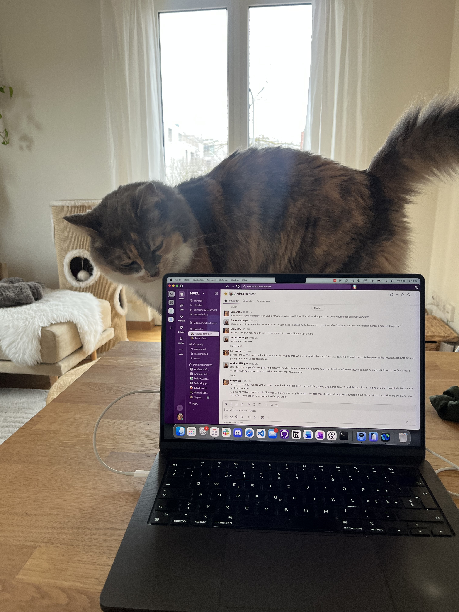

Using a fine-tuned large language model for symptom-based depression evaluation
npj Digital Medicine (2025)
Zurich, Switzerland
Innovating Mental Health with AI and Digital Health Solutions | Neuroscientist | Bridging Science and Technology
I am a postdoctoral researcher at the Psychiatric University Hospital Zurich, working at the intersection of psychiatry, artificial intelligence, and digital health to develop clinically meaningful tools for suicide prevention and depression assessment.
I design and evaluate LLM-based conversational agents and fine-tuned models for structured psychiatric interviews and clinical scoring, with a strong focus on ethics, implementation, and real-world clinical translation.
A full publication list is available on my Google Scholar profile. A few selected publications are highlighted below.
npj Digital Medicine (2025)
Preprint (2026)
International Journal of Medical Informatics (2024)
Ask questions about all publications in this website. Answers include citations so you can verify every claim.
Configure the backend API URL to activate chat.
I am currently curating selected projects in digital mental health, clinical AI, and responsible innovation.
Connect with meEvery serious researcher needs a quality-control team. Mine happens to be furry, dramatic, and suspiciously good at keyboard shortcuts.
Specializes in strategic naps on important papers and supervises all deadlines from a warm laptop corner.

Appears exactly when meetings get serious, contributes tail-based feedback, then leaves before follow-up questions.

Provides high-priority purr sessions during model training, peer review week, and all existential debugging moments.
Reach me at samantha.weber@bli.uzh.ch or connect on GitHub and LinkedIn.